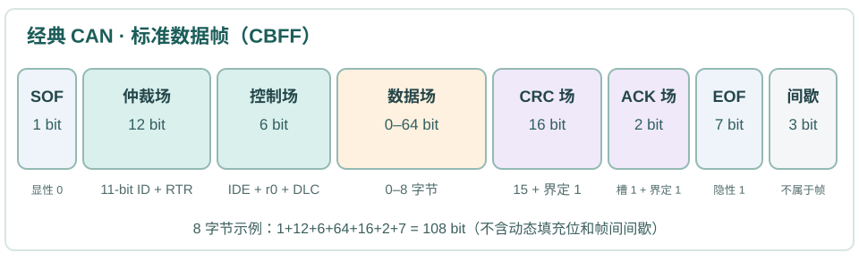
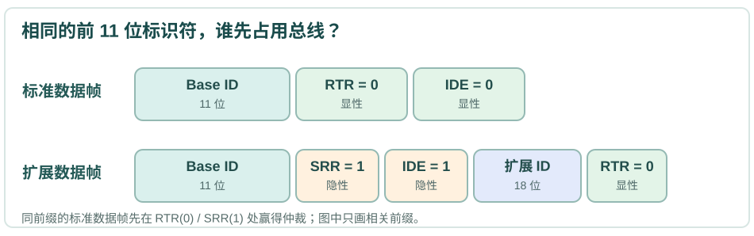
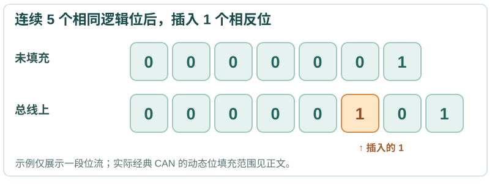

一帧 CAN 报文，究竟如何从标识符走到数据？
从“我收到了 ID=0x123”这个调试现场出发，拆开帧字段、仲裁、位填充、应答与四种帧的适用边界。
抓包软件显示 ID=0x123, DLC=8, Data=11 22 33 44 55 66 77 88。看起来只有标识符和八个数据字节，但导线上并非只传这 75 位信息：还必须有帧起始、控制、CRC、ACK 和帧结束等字段。把这些字段分清，才能理解为什么“发送成功”不等于“应用已收到”。
电压是怎样变成一条可用消息的？
CAN 的基本分工可以从两层来理解：物理层规定总线上的电气信号与位时间相关能力；数据链路层定义访问总线的规则、帧的编码与解码、应答和错误处理。很多实现又用 LLC（逻辑链路控制）与 MAC（介质访问控制）描述数据链路层内部的职责；这是理解协议的模型，具体控制器的硬件模块边界未必一一对应。CiA · Classical CAN
在基础 CAN 帧里，标识符主要用于仲裁优先级和接收过滤；“这是车速还是轮速”的语义，需要由上层通信约定解释。CAN 本身不负责把一个标识符天然映射为某个收件地址。
八个数据字节之外，还有哪些位？
先限定范围：下图和本节位数属于经典 CAN（CAN CC）11 位标识符的数据帧，不是 CAN FD。按从左到右的传输顺序，常见字段如下。

| 字段 | 标准数据帧位数 | 在做什么 |
|---|---|---|
| SOF | 1 | 显性起始位，用于同步 |
| 仲裁场 | 12 | 11 位 CAN-ID + 1 位 RTR（数据帧为显性 0） |
| 控制场 | 6 | IDE（标准帧为 0）、保留位 r0、4 位 DLC |
| 数据场 | 0～64 | 0～8 字节数据，按字节计 |
| CRC 场 | 16 | 15 位 CRC 序列 + 1 位 CRC 界定符 |
| ACK 场 | 2 | 1 位 ACK 槽 + 1 位 ACK 界定符 |
| EOF | 7 | 七位隐性帧结束 |
| 间歇 intermission | 3 | 两帧间最少三位间歇，不属于数据帧 |
发送方在 ACK 槽中发隐性位，至少一个正确接收了本帧的节点可将 ACK 槽拉为显性位。这里的 ACK 是链路层确认，不能保证目标应用已经消费数据，也不能确定是哪一个接收节点提供了 ACK。Kvaser · CAN Protocol Tutorial
为什么 29 位标识符不能简单理解成“11 位后面多 18 位”？
扩展格式总共用 29 位标识符（11 位基础 ID + 18 位扩展 ID），但在仲裁过程中还插入了 SRR 和 IDE 等控制位。经典 CAN 标准数据帧在基础 ID 之后发送 RTR=0；扩展数据帧在同一位置发送 SRR=1，然后发送 IDE=1。所以若两者前 11 位相同，标准数据帧在这一位置会先胜出。CiA · 帧格式

完整的经典 CAN 扩展数据帧仍有控制场、数据场、CRC、ACK 和 EOF。扩展帧的仲裁场为 32 bit：11 位基础 ID + SRR + IDE + 18 位扩展 ID + RTR；控制场为 6 bit（r1、r0 和 4 位 DLC）。因此相同 8 字节载荷、未计位填充时，扩展数据帧为 128 bit，不是把标准帧的长度简单替换成“29 位 ID”。
交互拆帧：同一条总线，哪些字段会变？
选择三种经典 CAN 帧，观察字段、位数和数据场的差异。下面的长度均不计动态位填充，也不计帧间间歇。
标准数据帧：RTR=0，IDE=0，DLC=8，携带 8 字节数据；再加最少 3 位间歇为 111 位（未计填充）。
4 位 DLC 字段本身可编码多个数值，但经典 CAN 的数据场最多只有 8 字节；不要把 DLC 的 4 位宽度误解成经典 CAN 可承载 15 字节。CAN FD 的 DLC 映射与帧格式应另行处理，不能直接套用本节 108/128 bit 公式。
连续很多个 0，为什么要强制插一个 1？
经典 CAN 采用非归零（NRZ）编码，连续同电平可能使接收器缺少重新同步的边沿。因此在受动态位填充规则约束的区域——从 SOF 到 CRC 序列（含 CRC 序列）——发送端每出现五个连续同值位后，就插入一个相反值的填充位；接收端再将它移除。CRC 界定符、ACK 和 EOF 等固定格式区域不采用这一动态填充规则。CiA · 位填充

1 是线上额外插入的填充位；接收器去填充后恢复原始 0000001。这是独立位流示例，并不是整帧波形。填充位会增加实际占用的传输时间，也给“六个相同位非法出现”的填充错误检测提供基础；但这条规则不是说任何情况下看见连续六个同值位都是错误——例如错误标志和帧尾固定格式有各自的编码规则。
数据帧之外，另外三种帧做什么？
携带 0～8 字节的经典 CAN 应用数据；数据帧 RTR=0，可采用标准或扩展标识符。
只存在于经典 CAN，RTR=1，没有数据场，DLC 用来表示期望回复的数据长度。协议并不保证某个节点一定响应。
检测到传输错误时使用错误标志与错误界定符。主动错误标志为六个显性位，被动错误标志为六个隐性位；错误界定符为八个隐性位。实际波形可能叠加多个节点的错误标志。
经典 CAN 规定了过载标志（六个显性位）和八位隐性的过载界定符。它只在规定的帧间时段与条件下使用，现代控制器中并不常见。
错误状态不能凭“有没有主动发送错误帧”猜测
经典 CAN 维护发送错误计数 TEC 和接收错误计数 REC：任一个计数达到 128 时节点进入错误被动状态；只有TEC 大于 255 时才进入 Bus-Off。被动错误标志是受故障限制机制约束的信号方式，不意味着“节点不确定自己是否出错”。不同错误事件有不同计数更新例外，不能把错误计数统一写成“每出错都 +1”。CiA · 错误限制资料
过载帧也不是“MCU 处理不过来就手工发六个显性位”的通用软件缓冲方案。现代应用如果出现接收队列丢帧，应优先检查中断时延、硬件 FIFO、软件队列、过滤配置和总线负载；错误帧与过载帧的详细机制将在第四章继续讲解。
不用开发板，也能验证“原始位数”和“线上位数”的不同
下面用 Python 3 的标准库重算经典 CAN 的未填充字段位数，并对短位流做独立位填充演示。此代码不是完整的 CAN 控制器、CRC 计算器或总线仿真器。
def frame_bits(extended=False, data_bytes=8, remote=False):
if not isinstance(data_bytes, int) or not 0 <= data_bytes <= 8:
raise ValueError("Classical CAN: data_bytes must be 0..8")
arbitration = 32 if extended else 12
payload = 0 if remote else data_bytes * 8
return 1 + arbitration + 6 + payload + 16 + 2 + 7
assert frame_bits() == 108 # 标准数据帧、8字节
assert frame_bits(extended=True) == 128 # 扩展数据帧、8字节
assert frame_bits(remote=True) == 44 # 标准远程帧、请求8字节
print(frame_bits() + 3) # 最小帧间间歇：111 bit再拿图 3 的位序列做练习：0000001 的第六个 0 前需要插入一个 1，线上位序列是 00000101，长度从 7 变为 8。实际帧的填充位置和 CRC 计算还需按真实帧格式处理。
看到 DLC=8，是否代表一定有8字节数据场？
不一定。对经典 CAN 数据帧来说，DLC=8 对应 8 字节；经典 CAN 远程帧可以带 DLC=8，但数据场始终不存在。
ACK 槽出现显性 0，能证明目标 ECU 的业务软件已处理吗？
不能。它仅说明有至少一个节点在链路层正确接收；还需上层确认机制才能判断应用处理。
错误被动与 Bus-Off 的计数门槛是同一回事吗？
不是。错误被动与 TEC/REC 任一达到 128 有关；Bus-Off 的门槛是 TEC 超过 255，而不是 REC 超过 255。
进一步查证
- CAN in Automation · CAN CC：标准与扩展帧、远程帧、DLC 与 ACK、位填充。
- Kvaser · CAN Bus Protocol Tutorial：帧种类、应答语义、特殊帧限制。
- CiA · Cyclic redundancy check in CAN frames：经典 CAN 的 CRC-15 和 FD 差异。
- CiA · CAN data link layer generations：远程帧和 CAN FD 的兼容边界。
- CiA Proceedings · CAN fault confinement：TEC/REC 的状态门槛。
接下来进入第三章：CAN 总线仲裁机制，把本章看到的 RTR、SRR 和 IDE 放到逐位竞争的时间轴上。